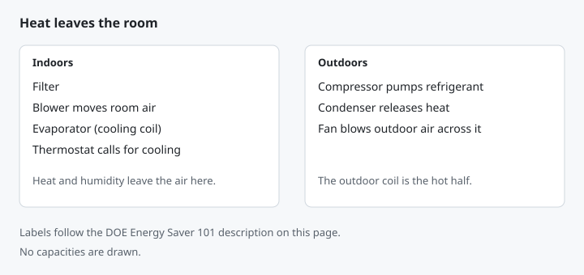

How Does an Air Conditioner Work?
It does not manufacture cold. It picks up heat and humidity indoors and dumps that heat outside.
Built by Jeremy Panasuk. Published October 3, 2026.
The loop DOE names
Energy Saver 101 labels the pieces without turning them into a repair manual. The evaporator is the cooling coil that takes heat and humidity out of the air. The blower, or fan, circulates room air over that coil and sends the chilled air back out. The compressor is the pump that moves refrigerant between the evaporator and the condenser. The condenser is the hot coil that releases the collected heat into the outside air, and a second fan blows outdoor air across it. A filter sits in the airstream to remove particles. A thermostat decides how much cool air is called for.
The same sheet separates two layouts. A split system puts the condenser and compressor outdoors and the indoor unit inside, often tied to a furnace or heat pump. A packaged system puts the evaporator, condenser, and compressor in one cabinet. A room air conditioner, window or portable, is the spot-cooling version of that packaged idea: the whole loop sits in one box. A ductless mini-split hangs an indoor head on the wall and leaves the compressor outside, which is why it can cool a zone without ducts. None of those layouts changes the direction of the heat. Heat still leaves the room.

Labels follow DOE Energy Saver 101, linked above. No capacities are drawn.
Humidity is not a side effect. Energy Saver 101 notes that excess humidity blocks the body's ability to cool itself by perspiration, and that one way an air conditioner makes you feel cooler is by reducing moisture in the air. That moisture leaves at the cold coil, while the compressor is running. If the thermostat is satisfied and the compressor stops, moisture removal stops with it.
Worked example: a sunny, poorly insulated 200 sq ft room
The cycle explains a sizing error that a bigger box cannot fix. Take a room this calculator can actually run: 200 sq ft, 8 ft ceiling, 2 windows, sun set to very sunny (factor 1.15), insulation set to poor (factor 1.25). Those factors belong to this site's room-load function, not to the ENERGY STAR chart.
Shell = 200 × 25 × (8 ÷ 8) × 1.15 × 1.25 = 7,187.5 BTU/hr. Windows = 2 × 600 = 1,200. Subtotal = 8,387.5. Raw load after the 10% margin = 8,387.5 × 1.10 = 9,226.25 BTU/hr. Rounded up to the next 500, the planning result is 9,500 BTU/hr.
The ENERGY STAR room air conditioner chart answers a narrower question. Two hundred square feet sits in the 150 up to 250 row, which is 6,000 BTU/hr, and a very sunny room increases that capacity by 10 percent: 6,000 × 1.10 = 6,600 BTU/hr. The chart does not apply this calculator's insulation multiplier or its per-window 600. Put the two numbers next to each other and they disagree by design. The chart is a shopping row for a room unit at an 8-foot ceiling. The calculator is a planning stack of sun, insulation, windows, and a margin. Neither one is a Manual J.
This site's mini-split function, given the rounded 9,500 BTU/hr, selects the next standard head at or above the load, which is 12,000 BTU/hr. Headroom is 12,000 ÷ 9,500 − 1 = 26 percent. Jumping to an 18,000 BTU/hr head because the sunny room "might need it" is 18,000 ÷ 9,500 − 1 = 89 percent above that same rounded load. ENERGY STAR's warning attaches here: a unit that is too large cools the room before it removes the humidity. DOE's Federal Energy Management Program says the same outcome in purchasing language: oversizing raises energy use and gives poor humidity removal because of excessive on-off cycling. The compressor, which is the pump that keeps the coil cold enough to wring moisture out, never stays on long enough to finish that job.
Common mistake
Treating the condenser as a cold-air factory, and buying the next cabinet up so the factory is "stronger." The outdoor coil is the hot half of the loop. Making it larger does not create a reserve of cold. It shortens each run. The other mistake is using one published row as if it included factors it never listed. If you are buying a window unit, start with ENERGY STAR's floor-area row and only the adjustments that page prints (shade, sun, extra people, kitchen). If you are planning a mini-split or a central system, run the calculator and then a Manual J. Do not average the two answers into a third number nobody published.
Limits, and when to call a pro
This is the refrigeration story in DOE's words plus one numerical pass through this site's functions. It is not a charge chart, a wiring diagram, or a Manual J. DOE says refrigerant that is low or leaking needs a trained technician to repair the leak and recharge the system. Do not open the loop. DOE's heating and cooling guide says oversized cooling systems can be noisy, leave you thermally uncomfortable, and contribute to mold and poor indoor air quality, and it says to insist on ACCA Manual J before equipment is sized. For a whole house, that is the pro step. For a single room unit, stay on the ENERGY STAR chart and the BTU/hr explanation.
Related
- HVAC load calculator
- Why a clogged filter starves this same loop
- Mini-split head sizes
- How long air conditioners and mini-splits last
- Topic map
Compiled with AI assistance from the sources below. Spot an error? Email jpanasuk@gmail.com.
Sources
- U.S. Department of Energy, Energy Saver 101: Home Cooling — https://www.energy.gov/sites/default/files/2016/11/f34/HomeCooling101.pdf — accessed Oct 3, 2026.
- ENERGY STAR, Room Air Conditioners — https://www.energystar.gov/products/room_air_conditioners — accessed Oct 3, 2026.
- U.S. Department of Energy, FEMP purchasing guidance for room air conditioners — https://www.energy.gov/cmei/femp/purchasing-energy-efficient-room-air-conditioners — accessed Oct 3, 2026.
- U.S. Department of Energy, Guide to Home Heating and Cooling (DOE/EE-0338) — https://www.energy.gov/sites/prod/files/guide_to_home_heating_cooling.pdf — accessed Oct 3, 2026.
- ACCA Manual J residential load calculation — https://www.acca.org/standards/technical-manuals/manual-j — accessed Oct 3, 2026.
Frequently asked questions
Does an air conditioner make cold air?
DOE's Energy Saver 101 says air conditioners transfer heat from the home's interior to the outdoors, similar to a refrigerator. The cooling coils remove heat and humidity with refrigerant; a blower circulates room air over the evaporator.
Why does an oversized air conditioner feel clammy?
ENERGY STAR says a unit that is too large cools the room before it has a chance to remove the humidity, so the air can feel damp and clammy. The refrigeration cycle has to keep running to wring moisture out at the evaporator.
What is the difference between a split system and a packaged unit?
DOE says many systems are called split because the condenser and compressor are outdoors and the indoor unit is often connected to a furnace or heat pump. A packaged system puts the evaporator, condenser, and compressor in one unit.